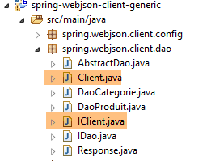
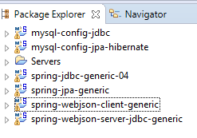
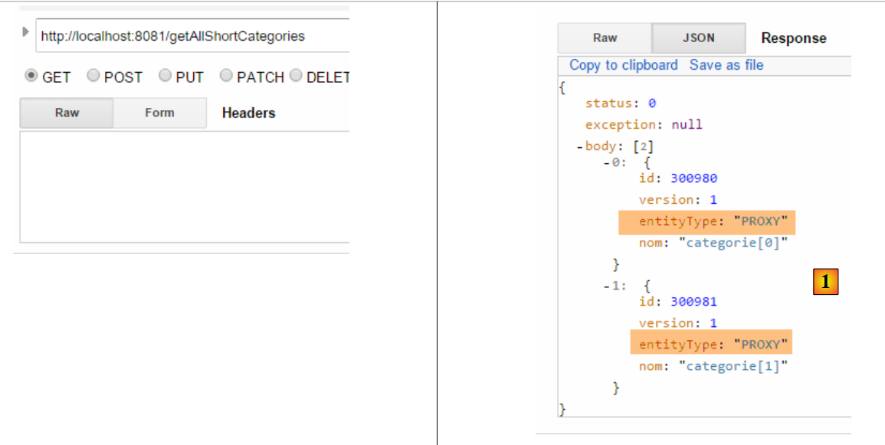
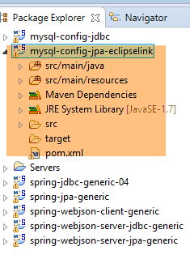
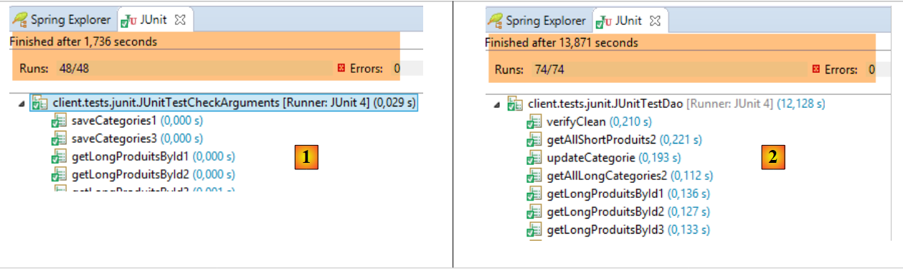
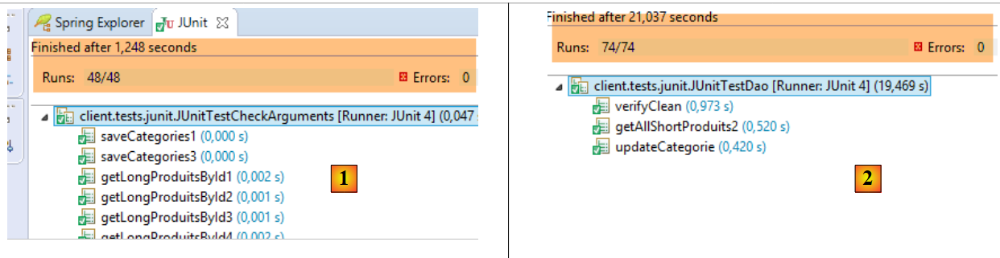
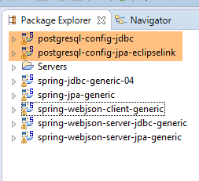

18. Ein für den /JSON-Webdienst programmierter Client
Da die Datenbank [dbproduitscategories] nun im Web verfügbar ist, werden wir eine Anwendung schreiben, die sie nutzt. Wir erhalten dann die folgende Client-Server-Architektur:
 |
Die Client-Anwendung wird drei Schichten umfassen:
- eine [HTTP-Client]-Schicht [3] zur Kommunikation mit der /jSON-Webanwendung, die die Datenbank bereitstellt;
- eine [DAO]-Schicht [2], die dieselbe Schnittstelle wie die [DAO]-Schicht [4] bereitstellt;
- eine JUnit-Testschicht [1], um zu überprüfen, ob Client und Server korrekt funktionieren;
18.1. Das Eclipse-Projekt
Das Eclipse-Projekt des Clients sieht wie folgt aus:
 |
 |  |  |
 |  |
- Das Paket [spring.webjson.client.config] enthält die Spring-Konfiguration für die [DAO]-Schicht;
- das Paket [spring.webjson.client.dao] enthält die Implementierung der [DAO]-Schicht;
- Das Paket [spring.webjson.client.entities] enthält die Objekte, die mit dem Webservice / JSON ausgetauscht werden. Wir kennen sie alle;
- Das Paket [spring.webjson.client.infrastructure] enthält die vom Projekt verwendeten Ausnahmeklassen. Wir kennen sie alle;
18.2. Maven-Konfiguration des Projekts
Das Projekt ist ein Maven-Projekt, das durch die folgende [pom.xml]-Datei konfiguriert wird:
<project xmlns="http://maven.apache.org/POM/4.0.0" xmlns:xsi="http://www.w3.org/2001/XMLSchema-instance"
xsi:schemaLocation="http://maven.apache.org/POM/4.0.0 http://maven.apache.org/xsd/maven-4.0.0.xsd">
<modelVersion>4.0.0</modelVersion>
<groupId>dvp.spring.database</groupId>
<artifactId>spring-webjson-client-generic</artifactId>
<version>0.0.1-SNAPSHOT</version>
<description>Client console du serveur web / jSON</description>
<name>spring-webjson-client-generic</name>
<properties>
<project.build.sourceEncoding>UTF-8</project.build.sourceEncoding>
<java.version>1.7</java.version>
</properties>
<parent>
<groupId>org.springframework.boot</groupId>
<artifactId>spring-boot-starter-parent</artifactId>
<version>1.2.3.RELEASE</version>
</parent>
<dependencies>
<!-- Spring -->
<dependency>
<groupId>org.springframework</groupId>
<artifactId>spring-web</artifactId>
</dependency>
<!-- jSON library used by Spring -->
<dependency>
<groupId>com.fasterxml.jackson.core</groupId>
<artifactId>jackson-core</artifactId>
</dependency>
<dependency>
<groupId>com.fasterxml.jackson.core</groupId>
<artifactId>jackson-databind</artifactId>
</dependency>
<!-- component used by Spring RestTemplate -->
<dependency>
<groupId>org.apache.httpcomponents</groupId>
<artifactId>httpclient</artifactId>
</dependency>
<!-- Google Guava -->
<dependency>
<groupId>com.google.guava</groupId>
<artifactId>guava</artifactId>
<version>16.0.1</version>
</dependency>
<!-- log library -->
<dependency>
<groupId>org.springframework.boot</groupId>
<artifactId>spring-boot-starter-logging</artifactId>
</dependency>
<!-- Spring Boot Test -->
<dependency>
<groupId>org.springframework.boot</groupId>
<artifactId>spring-boot-starter-test</artifactId>
<scope>test</scope>
</dependency>
<!-- Spring Boot -->
<dependency>
<groupId>org.springframework.boot</groupId>
<artifactId>spring-boot</artifactId>
<scope>test</scope>
</dependency>
</dependencies>
<!-- plugins -->
<build>
<plugins>
<plugin>
<groupId>org.apache.maven.plugins</groupId>
<artifactId>maven-surefire-plugin</artifactId>
<version>2.18.1</version>
</plugin>
</plugins>
</build>
</project>
- Zeilen 16–20: das übergeordnete Maven-Projekt [spring-boot-starter-parent], das es uns ermöglicht, eine Reihe von Abhängigkeiten zu definieren, ohne deren Versionen anzugeben, da diese im übergeordneten Projekt definiert sind;
- Zeilen 24–27: Obwohl wir keine Webanwendung schreiben, benötigen wir die Abhängigkeit [spring-web], die die Klasse [RestTemplate] enthält, die eine einfache Anbindung an eine Webanwendung oder JSON ermöglicht;
- Zeilen 29–36: eine JSON-Bibliothek;
- Zeilen 38–41: eine Abhängigkeit, mit der wir ein Timeout für die HTTP-Anfragen des Clients festlegen können. Ein Timeout ist die maximale Wartezeit auf eine Serverantwort. Nach Ablauf dieser Zeit signalisiert der Client einen Timeout-Fehler, indem er eine Ausnahme auslöst;
- Zeilen 43–48: die Google Guava-Bibliothek;
- Zeilen 50–53: die Logging-Bibliothek;
- Zeilen 54–64: die Abhängigkeit für JUnit-Tests. Sie enthält die für das Testen erforderliche JUnit-4-Bibliothek. Diese Abhängigkeiten haben das Attribut [<scope>test</scope>], was angibt, dass sie nur für die Testphase benötigt werden. Sie sind nicht im endgültigen Projektarchiv enthalten;
18.3. Spring-Konfiguration
|
Die Klasse [AppConfig] übernimmt die Spring-Konfiguration für den HTTP-Client. Der Code lautet wie folgt:
package spring.webjson.client.config;
import java.util.ArrayList;
import java.util.List;
import org.springframework.beans.factory.config.ConfigurableBeanFactory;
import org.springframework.context.annotation.Bean;
import org.springframework.context.annotation.ComponentScan;
import org.springframework.context.annotation.Configuration;
import org.springframework.context.annotation.Scope;
import org.springframework.http.client.HttpComponentsClientHttpRequestFactory;
import org.springframework.http.converter.HttpMessageConverter;
import org.springframework.http.converter.json.MappingJackson2HttpMessageConverter;
import org.springframework.web.client.RestTemplate;
import com.fasterxml.jackson.databind.ObjectMapper;
import com.fasterxml.jackson.databind.ser.impl.SimpleBeanPropertyFilter;
import com.fasterxml.jackson.databind.ser.impl.SimpleFilterProvider;
@Configuration
@ComponentScan({ "spring.webjson.client.dao" })
public class AppConfig {
// constants
static private final int TIMEOUT = 1000;
static private final String URL_WEBJSON = "http://localhost:8081";
// filters jSON
@Bean
public ObjectMapper jsonMapper(RestTemplate restTemplate) {
return ((MappingJackson2HttpMessageConverter) (restTemplate.getMessageConverters().get(0))).getObjectMapper();
}
@Bean
@Scope(value = ConfigurableBeanFactory.SCOPE_PROTOTYPE)
ObjectMapper jsonMapperShortCategorie(RestTemplate restTemplate) {
ObjectMapper jsonMapper = jsonMapper(restTemplate);
jsonMapper.setFilters(new SimpleFilterProvider().addFilter("jsonFilterCategorie",
SimpleBeanPropertyFilter.serializeAllExcept("produits")));
return jsonMapper;
}
@Bean
@Scope(value = ConfigurableBeanFactory.SCOPE_PROTOTYPE)
ObjectMapper jsonMapperLongCategorie(RestTemplate restTemplate) {
ObjectMapper jsonMapper = jsonMapper(restTemplate);
jsonMapper.setFilters(new SimpleFilterProvider().addFilter("jsonFilterCategorie",
SimpleBeanPropertyFilter.serializeAllExcept()).addFilter("jsonFilterProduit",
SimpleBeanPropertyFilter.serializeAllExcept("categorie")));
return jsonMapper;
}
@Bean
@Scope(value = ConfigurableBeanFactory.SCOPE_PROTOTYPE)
ObjectMapper jsonMapperShortProduit(RestTemplate restTemplate) {
ObjectMapper jsonMapper = jsonMapper(restTemplate);
jsonMapper.setFilters(new SimpleFilterProvider().addFilter("jsonFilterProduit",
SimpleBeanPropertyFilter.serializeAllExcept("categorie")));
return jsonMapper;
}
@Bean
@Scope(value = ConfigurableBeanFactory.SCOPE_PROTOTYPE)
ObjectMapper jsonMapperLongProduit(RestTemplate restTemplate) {
ObjectMapper jsonMapper = jsonMapper(restTemplate);
jsonMapper.setFilters(new SimpleFilterProvider().addFilter("jsonFilterProduit",
SimpleBeanPropertyFilter.serializeAllExcept()).addFilter("jsonFilterCategorie",
SimpleBeanPropertyFilter.serializeAllExcept("produits")));
return jsonMapper;
}
@Bean
public RestTemplate restTemplate(int timeout) {
// creation of the RestTemplate component
HttpComponentsClientHttpRequestFactory factory = new HttpComponentsClientHttpRequestFactory();
RestTemplate restTemplate = new RestTemplate(factory);
// converter jSON
List<HttpMessageConverter<?>> messageConverters = new ArrayList<HttpMessageConverter<?>>();
messageConverters.add(new MappingJackson2HttpMessageConverter());
restTemplate.setMessageConverters(messageConverters);
// exchange timeout
factory.setConnectTimeout(timeout);
factory.setReadTimeout(timeout);
// result
return restTemplate;
}
@Bean
public int timeout() {
return TIMEOUT;
}
@Bean
public String urlWebJson() {
return URL_WEBJSON;
}
}
- Zeile 20: Die Klasse ist eine Spring-Konfigurationsklasse;
- Zeile 21: Weitere Spring-Komponenten befinden sich im Paket [spring.webjson.client.dao];
- Zeile 25: Es wird ein Timeout von einer Sekunde (1000 ms) festgelegt;
- Zeilen 88–91: Die Bean, die diesen Wert zurückgibt;
- Zeile 26: Die URL des Webdienstes / JSON;
- Zeilen 93–96: die Bean, die diesen Wert zurückgibt;
- Zeilen 72–86: Die Konfiguration der Klasse [RestTemplate], die die Kommunikation mit dem Webservice/JSON übernimmt. Wenn keine Konfiguration erforderlich ist, kann sie im Code mit einem einfachen [new RestTemplate()] instanziiert werden. Hier möchten wir das Timeout für die Kommunikation mit dem Webservice/JSON festlegen. Die [timeout]-Bean in Zeile 89 wird als Parameter an die [restTemplate]-Methode in Zeile 73 übergeben;
- Zeile 75: Die Komponente [HttpComponentsClientHttpRequestFactory] ermöglicht es uns, das Timeout für die Kommunikation festzulegen (Zeilen 82–83);
- Zeile 76: Die Klasse [RestTemplate] wird mithilfe dieser Komponente instanziiert. Da sie für die Kommunikation mit dem Webservice/JSON auf diese Komponente angewiesen ist, unterliegen die Datenaustausche tatsächlich dem Timeout;
- Zeilen 78–80: Wir verknüpfen einen JSON-Konverter mit der Klasse [RestTemplate]. Dies haben wir bereits bei der Betrachtung des Webdienstes besprochen. Client und Server tauschen Textzeilen aus. Ein Konverter serialisiert ein Objekt in Text und deserialisiert Text wieder in ein Objekt. Der Klasse [RestTemplate] können mehrere Konverter zugeordnet sein, und welcher zu einem bestimmten Zeitpunkt ausgewählt wird, hängt von den vom Server gesendeten HTTP-Headern ab. Hier haben wir nur einen JSON-Konverter, da die ausgetauschten Textzeilen JSON sind;
- Zeilen 82–83: Die Timeouts für den Austausch werden festgelegt;
- Zeilen 28–70: Definieren Sie JSON-Filter. Diese entsprechen denen auf dem Server, die in Abschnitt 17.3.2.1 vorgestellt wurden;
- Zeilen 29–32: Die [jsonMapper]-Bean ist der JSON-Mapper für den [MappingJackson2HttpMessageConverter], den wir der [RestTemplate]-Klasse zugeordnet haben. Wir benötigen dies in der Definition der JSON-Filter;
- Zeilen 34–41: Eine Bean, die den JSON-Filter [Kategorie ohne ihre Produkte] definiert. Die Methode [jsonMapperShortCategory] nimmt die in Zeile 73 definierte [RestTemplate]-Bean als Parameter entgegen;
- Zeile 37: Wir rufen die [jsonMapper]-Methode aus Zeile 30 auf, um den JSON-Mapper abzurufen;
- Zeilen 38–39: Wir legen den Filter so fest, dass er eine Kategorie ohne ihre Produkte zurückgibt;
- Zeile 40: Der JSON-Mapper wird wie konfiguriert zurückgegeben;
- Zeilen 42–51: Der JSON-Filter zum Abrufen einer Kategorie zusammen mit ihren Produkten;
- Zeilen 53–60: Der JSON-Filter zum Abrufen eines Produkts ohne dessen Kategorie;
- Zeilen 62–70: Der JSON-Filter zum Abrufen eines Produkts mit seiner Kategorie;
All diese Beans stehen sowohl dem Code der [DAO]-Schicht als auch den JUnit-Tests zur Verfügung.
18.4. Implementierung des HTTP-Clients
 |
Oben sehen Sie die [HTTP-Client]-Schicht, die mit dem soeben erstellten Webservice kommuniziert. Wir werden sie nun näher betrachten.
 |
Die Klasse [Client] übernimmt die Kommunikation mit dem Webdienst / JSON. Sie implementiert die folgende Schnittstelle [IClient]:
package spring.webjson.client.dao;
import org.springframework.http.HttpMethod;
public interface IClient {
public <T1, T2> T1 getResponse(String url, HttpMethod method, int errStatus, T2 body);
}
Die Schnittstelle verfügt nur über eine Methode [getResponse]:
- Zeile 6: Die Methode [getResponse] ist eine generische Methode, die durch zwei Typen parametrisiert ist:
- [T1]: ist der erwartete Antworttyp vom Server in [Response<T1>], zum Beispiel [List<Category>],
- [T2]: ist der Typ des JSON-Parameters, der per POST-Operation gesendet wird, zum Beispiel [List<Product>];
- Zeile 6: Die Methode [getResponse] gibt ein Ergebnis vom Typ T1 zurück, zum Beispiel [List<Category>];
- Zeile 6: Die Parameter von [getResponse] lauten wie folgt:
- [String url]: die abzufragende URL;
- [HttpMethod method]: HTTP-Methode der Anfrage, je nach Bedarf GET oder POST,
- [int errStatus]: Fehlercode, der in der Klasse [DaoException] verwendet wird, falls während der Kommunikation mit dem Server ein Fehler auftritt,
- [T2 body]: der Wert, der gesendet werden soll, wenn eine POST-Anfrage gestellt wird;
Die Klasse [Client] implementiert die Schnittstelle [IClient] wie folgt:
package spring.webjson.client.dao;
import java.net.URI;
import java.util.ArrayList;
import java.util.List;
import org.springframework.beans.factory.annotation.Autowired;
import org.springframework.core.ParameterizedTypeReference;
import org.springframework.http.HttpMethod;
import org.springframework.http.MediaType;
import org.springframework.http.RequestEntity;
import org.springframework.http.ResponseEntity;
import org.springframework.stereotype.Component;
import org.springframework.web.client.RestTemplate;
import spring.webjson.client.infrastructure.DaoException;
@Component
public class Client implements IClient {
// injections
@Autowired
protected RestTemplate restTemplate;
@Autowired
protected String urlServiceWebJson;
// local
private String simpleClassName = getClass().getSimpleName();
// generic request
@Override
public <T1, T2> T1 getResponse(String url, HttpMethod method, int errStatus, T2 body) {
...
}
// list of exception error messages
protected List<String> getMessagesForException(Exception exception) {
...
}
}
- Zeile 18: Die Klasse [Client] ist eine Spring-Komponente und kann daher in andere Spring-Komponenten injiziert werden;
- Zeilen 22–23: Injektion des in [AppConfig] definierten [RestTemplate]-Beans (siehe Abschnitt 18.3), der die Kommunikation mit dem Server übernimmt;
- Zeilen 24–25: Injektion der in [AppConfig] definierten Webservice-URL / JSON (siehe Abschnitt 18.3);
- Zeilen 37–39: Die private Methode [getMessagesForException] ist eine Hilfsmethode, die dazu dient, die Liste der in einer Ausnahme enthaltenen Fehlermeldungen abzurufen. Wir sind ihr bereits mehrmals begegnet;
Fahren wir fort:
// generic request
@Override
public <T1, T2> T1 getResponse(String url, HttpMethod method, int errStatus, T2 body) {
// the server response
ResponseEntity<Response<T1>> response;
try {
// prepare the query
RequestEntity<?> request = null;
if (method == HttpMethod.GET) {
request = RequestEntity.get(new URI(String.format("%s%s", urlServiceWebJson, url)))
.accept(MediaType.APPLICATION_JSON).build();
}
if (method == HttpMethod.POST) {
request = RequestEntity.post(new URI(String.format("%s%s", urlServiceWebJson, url)))
.header("Content-Type", "application/json").accept(MediaType.APPLICATION_JSON).body(body);
}
// execute the query
response = restTemplate.exchange(request, new ParameterizedTypeReference<Response<T1>>() {
});
} catch (Exception e) {
// encapsulate the exception
throw new DaoException(errStatus, e, simpleClassName);
}
...
}
- Zeile 18: Die Anweisung, die die Anfrage an den Server sendet und dessen Antwort empfängt. Die [RestTemplate]-Komponente bietet eine Vielzahl von Methoden für die Interaktion mit dem Server, aber nur die [exchange]-Methode akzeptiert generische Parameter. Aus diesem Grund wurde sie ausgewählt. Der zweite Parameter gibt den Typ der erwarteten Antwort an. Der erste Parameter ist die [RequestEntity]-Anfrage (Zeile 8). Das Ergebnis der [exchange]-Methode ist vom Typ [ResponseEntity<Response<T1>>] (Zeile 5). Der Typ [ResponseEntity] kapselt die vollständige Antwort des Servers, einschließlich der HTTP-Header und des vom Server gesendeten Dokuments. In ähnlicher Weise kapselt der Typ [RequestEntity] die gesamte Anfrage des Clients, einschließlich der HTTP-Header und aller übermittelten Daten;
- Zeilen 8–16: Wir müssen die [RequestEntity]-Anfrage erstellen. Diese unterscheidet sich je nachdem, ob wir eine GET- oder eine POST-Anfrage verwenden;
- Zeile 10: die GET-Anfrage. Die Klasse [RequestEntity] bietet statische Methoden zum Erstellen von GET-, POST-, HEAD- und anderen Anfragen. Mit der Methode [RequestEntity.get] können Sie eine GET-Anfrage erstellen, indem Sie die verschiedenen Methoden, aus denen sie besteht, miteinander verketten:
- Die Methode [RequestEntity.get] nimmt die Ziel-URL als Parameter in Form einer URI-Instanz entgegen,
- die Methode [accept] ermöglicht es Ihnen, die Elemente des HTTP-Headers [Accept] zu definieren. Hier geben wir an, dass wir den Typ [application/json] akzeptieren, den der Server senden wird;
- die Methode [build] verwendet diese Informationen, um den Typ [RequestEntity] der Anfrage zu erstellen;
- Zeile 14: die POST-Anfrage. Mit der Methode [RequestEntity.post] können Sie eine POST-Anfrage erstellen, indem Sie die verschiedenen Methoden, aus denen sie besteht, miteinander verketten:
- Die Methode [RequestEntity.post] nimmt die Ziel-URL als Parameter in Form einer URI-Instanz entgegen,
- die Methode [header] definiert einen HTTP-Header. Hier senden wir den Header [Content-Type: application/json] an den Server, um anzugeben, dass die gesendeten Daten in Form einer JSON-Zeichenkette ankommen werden;
- die Methode [accept] ermöglicht es uns anzugeben, dass wir den Typ [application/json] akzeptieren, den der Server senden wird;
- Die Methode [body] legt den gesendeten Wert fest. Dies ist der vierte Parameter der generischen Methode [getResponse] (Zeile 1);
- Zeilen 20–23: Tritt ein Kommunikationsfehler mit dem Server auf, wird eine [DaoException] ausgelöst, wobei der Fehlercode auf den Parameter [errStatus] gesetzt wird, der als dritter Parameter an die generische Methode [getResponse] übergeben wird (Zeile 3);
Die Methode [getResponse] wird wie folgt fortgesetzt:
// generic request
@Override
public <T1, T2> T1 getResponse(String url, HttpMethod method, int errStatus, T2 body) {
...
// retrieve the body of the reply
Response<T1> entity = response.getBody();
int status = entity.getStatus();
// server-side errors?
if (status != 0) {
// create an exception
throw new DaoException(status, new RuntimeException(entity.getException()), simpleClassName);
} else {
// it's good
return entity.getBody();
}
}
- Zeile 4: Wir haben die Antwort vom Server erhalten. Sie ist vom Typ [ResponseEntity<Response<T1>>] (Zeile 5 des vorherigen Codebeispiels), wobei die Klasse [Response] die bereits auf der Serverseite verwendete Klasse ist:
package spring.webjson.client.dao;
public class Response<T> {
// ----------------- properties
// operation status
private int status;
// the possible exception
private String exception;
// the body of the reply
private T body;
// manufacturers
public Response() {
}
public Response(int status, String exception, T body) {
this.status = status;
this.exception = exception;
this.body = body;
}
// getters and setters
...
}
Kehren wir zur Methode [getResponse] zurück:
- Zeile 6: Wir rufen das in der Antwort gekapselte [Response<T1>]-Objekt ab. Dieser Typ verfügt über die Felder [int status, String exception, T1 body];
- Zeile 7: Wir rufen den [status] der Antwort ab, bei dem es sich um einen Fehlercode handelt;
- Zeilen 9–12: Liegt ein Fehler vor, lösen wir eine Ausnahme aus, die die beiden Informationen [status, exception] aus der Antwort des Servers enthält;
- Zeile 14: Andernfalls geben wir den in der Antwort [Response<T1>] enthaltenen Typ [T1] zurück;
Die Klasse [Client] ist generisch. Sie kann für jeden Web-/JSON-Client verwendet werden.
18.5. Implementierung der [Dao]-Schicht
 |
 |
18.5.1. Die Klasse [AbstractDao]
Die clientseitige [DAO]-Schicht verfügt über dieselbe Schnittstelle wie die serverseitige [DAO]-Schicht (siehe Abschnitt 4.7):
package spring.webjson.client.dao;
import java.util.List;
import spring.webjson.client.entities.AbstractCoreEntity;
public interface IDao<T extends AbstractCoreEntity> {
// list of all T entities
public List<T> getAllShortEntities();
public List<T> getAllLongEntities();
// special entities - short version
public List<T> getShortEntitiesById(Iterable<Long> ids);
public List<T> getShortEntitiesById(Long... ids);
public List<T> getShortEntitiesByName(Iterable<String> names);
public List<T> getShortEntitiesByName(String... names);
// special entities - long version
public List<T> getLongEntitiesById(Iterable<Long> ids);
public List<T> getLongEntitiesById(Long... ids);
public List<T> getLongEntitiesByName(Iterable<String> names);
public List<T> getLongEntitiesByName(String... names);
// update of several entities
public List<T> saveEntities(Iterable<T> entities);
public List<T> saveEntities(@SuppressWarnings("unchecked") T... entities);
// delete all entities
public void deleteAllEntities();
// deletion of multiple entities
public void deleteEntitiesById(Iterable<Long> ids);
public void deleteEntitiesById(Long... ids);
public void deleteEntitiesByName(Iterable<String> names);
public void deleteEntitiesByName(String... names);
public void deleteEntitiesByEntity(Iterable<T> entities);
public void deleteEntitiesByEntity(@SuppressWarnings("unchecked") T... entities);
}
Die Klasse [AbstractDao] implementiert die Schnittstelle [IDao]. Sie entspricht der gleichnamigen Klasse auf der Serverseite (siehe Abschnitt 4.8). Sie dient als Oberklasse für die Klassen [DaoCategorie] und [DaoProduit]. Sie ist aus zwei Gründen nicht identisch:
- Auf der Serverseite verwaltet die Klasse [AbstractDao] eine Information:
// injections
@Autowired
@Qualifier("maxPreparedStatementParameters")
protected int maxPreparedStatementParameters;
was wir hier nicht benötigen.
- Auf der Serverseite verwendet die Klasse [AbstractDao] die Annotation [@Transactional], um jede Methode in eine Transaktion zu kapseln. Auf der Clientseite gibt es keine Datenbank zu verwalten. Diese Annotation entfällt daher;
Die Klasse [AbstractDao] überprüft lediglich die Gültigkeit der Aufrufparameter für die Methoden der Schnittstelle [IDao], bevor sie den Aufruf an die untergeordneten Klassen delegiert:
package spring.webjson.client.dao;
import java.util.ArrayList;
import java.util.List;
import spring.webjson.client.entities.AbstractCoreEntity;
import spring.webjson.client.infrastructure.MyIllegalArgumentException;
import com.google.common.collect.Lists;
public abstract class AbstractDao<T1 extends AbstractCoreEntity> implements IDao<T1> {
// local
protected String simpleClassName = getClass().getSimpleName();
@Override
public List<T1> getShortEntitiesById(Iterable<Long> ids) {
// argument validity
List<T1> entities = checkNullOrEmptyArgument(true, ids);
if (entities != null) {
return entities;
}
// result
return getShortEntitiesById(Lists.newArrayList(ids));
}
@Override
public List<T1> getShortEntitiesById(Long... ids) {
// argument validity
List<T1> entities = checkNullOrEmptyArgument(true, ids);
if (entities != null) {
return entities;
}
// result
return getShortEntitiesById(Lists.newArrayList(ids));
}
...
@Override
public void deleteEntitiesByEntity(@SuppressWarnings("unchecked") T1... entities) {
...
}
// méthodes privées ----------------------------------------------
private <T3> List<T1> checkNullOrEmptyArgument(boolean checkEmpty, Iterable<T3> elements) {
// elements null ?
if (elements == null) {
throw new MyIllegalArgumentException(222, new NullPointerException("L'argument ne peut être null"),
simpleClassName);
}
// empty elements?
if (!elements.iterator().hasNext()) {
if (checkEmpty) {
throw new MyIllegalArgumentException(223, new RuntimeException("l'argument ne peut être une liste vide"),simpleClassName);
} else {
return new ArrayList<T1>();
}
}
// default result
return null;
}
@SuppressWarnings("unchecked")
private <T3> List<T1> checkNullOrEmptyArgument(boolean checkEmpty, T3... elements) {
// elements null ?
if (elements == null) {
throw new MyIllegalArgumentException(222, new NullPointerException("L'argument ne peut être null"),simpleClassName);
}
// empty elements?
if (elements.length == 0) {
if (checkEmpty) {
throw new MyIllegalArgumentException(223, new RuntimeException("L'argument ne peut être une liste vide"),
simpleClassName);
} else {
return new ArrayList<T1>();
}
}
// default result
return null;
}
// méthodes protégées ----------------------------------------------
abstract protected List<T1> getShortEntitiesById(List<Long> ids);
abstract protected List<T1> getShortEntitiesByName(List<String> names);
abstract protected List<T1> getLongEntitiesById(List<Long> ids);
abstract protected List<T1> getLongEntitiesByName(List<String> names);
abstract protected List<T1> saveEntities(List<T1> entities);
abstract protected void deleteEntitiesById(List<Long> ids);
abstract protected void deleteEntitiesByName(List<String> names);
}
18.5.2. Die Klasse [DaoCategorie]
 |
Die Klasse [DaoCategorie] sieht wie folgt aus:
package spring.webjson.client.dao;
import java.util.List;
import org.springframework.beans.factory.annotation.Autowired;
import org.springframework.context.ApplicationContext;
import org.springframework.http.HttpMethod;
import org.springframework.stereotype.Component;
import spring.webjson.client.entities.Categorie;
import spring.webjson.client.entities.CoreCategorie;
import spring.webjson.client.entities.CoreProduit;
import spring.webjson.client.entities.Produit;
import spring.webjson.client.infrastructure.DaoException;
import com.fasterxml.jackson.core.type.TypeReference;
import com.fasterxml.jackson.databind.ObjectMapper;
@Component
public class DaoCategorie extends AbstractDao<Categorie> {
@Autowired
private ApplicationContext context;
@Autowired
private IClient client;
...
}
- Zeile 19: Die Klasse [DaoClient] ist eine Spring-Komponente, in die andere Spring-Komponenten injiziert werden können;
- Zeile 20: Die Klasse [DaoClient] erweitert die soeben gesehene Klasse [AbstractDao<Category>] und implementiert daher die Schnittstelle [IDao<Category>];
- Zeilen 22–23: Wir injizieren den Spring-Kontext, um auf dessen Beans zuzugreifen;
- Zeilen 24–25: Wir injizieren den soeben erstellten HTTP-Client;
Die Implementierungen der verschiedenen Methoden der Schnittstelle [DaoCategorie] folgen alle demselben Muster. Wir stellen drei Methoden vor, von denen eine auf einer [GET]-Operation basiert, die anderen beiden auf einer [POST]-Operation.
18.5.2.1. Die Methode [getAllLongEntities]
Die Methode [getAllLongEntities] gibt die Langform aller Kategorien in der Datenbank zurück:
@Override
public List<Categorie> getAllLongEntities() {
try {
// filters jSON
ObjectMapper mapper = context.getBean("jsonMapperLongCategorie", ObjectMapper.class);
// get all categories
Object map = client.<List<Categorie>, Void> getResponse("/getAllLongCategories", HttpMethod.GET, 232, null);
// the List<Categorie> category list
List<Categorie> categories = mapper.readValue(mapper.writeValueAsString(map),
new TypeReference<List<Categorie>>() {
});
// redo the product --> category link
return linkCategorieWithProduits(categories);
} catch (DaoException e1) {
throw e1;
} catch (Exception e2) {
throw new DaoException(233, e2, simpleClassName);
}
}
- Zeile 2: Die Methode gibt die Liste der Kategorien in ihrer Langform zurück;
- Zeile 5: Der JSON-Mapper, der den gesendeten Wert serialisiert (es gibt keinen) und die von der [Client]-Klasse zurückgegebene Antwort deserialisiert (Kategorien in ihrer Langform);
- Zeile 7: Wir rufen die Methode [getResponse] der Klasse [Client] auf. Diese Methode übernimmt die Kommunikation mit dem Webservice / JSON. Ihre Parameter lauten wie folgt:
- die URL des abgefragten Dienstes [/getAllLongCategories];
- die zu verwendende [GET]-Methode;
- der bei einem Fehler zu verwendende Fehlercode (232);
- der übermittelte Wert. Hier gibt es keinen;
- Zeile 7: Im Ausdruck [client.<List<Category>, Void>] geben wir die tatsächlichen Parameter der generischen Typen [T1, T2] für die Methode [getResponse] an. Zur Erinnerung: [T1] ist der Typ der erwarteten Antwort und [T2] ist der Typ des übermittelten Werts. Hier erwarten wir ein Ergebnis vom Typ [List<Category>] und es gibt keinen übermittelten Wert [Void];
- Zeile 7: Das von der Methode [getResponse] zurückgegebene Ergebnis wird in einem Objekt vom Typ [Object] gespeichert. Das ist etwas seltsam, da wir einen Typ [List<Category>] erwarten. Der Grund dafür ist, dass die Methode [getResponse], die mit den generischen Typen [T1, T2] arbeitet, immer einen Typ [java.util.LinkedHashMap] zurückgibt, der dann verarbeitet werden muss, um den korrekten Typ zurückzugeben;
- Zeile 9: Wir geben die Liste der Kategorien zurück. Dazu serialisieren wir das [map]-Objekt [mapper.writeValueAsString(map)] in eine JSON-Zeichenkette, die wir anschließend wieder in einen Typ [List<Category>] deserialisieren;
- Zeile 13: Wir haben eine Liste von Kategorien erhalten, von denen einige Produkte enthalten können. Wir erhalten die Kurzversion dieser Produkte. Daher ist bei der Deserialisierung das Feld [category] der erstellten [Product]-Objekte auf null gesetzt. Die Methode [linkCategoryWithProducts] stellt die Verbindung zwischen einem [Product] und seiner [Category] wieder her;
- Zeilen 14–15: Wir fangen die [DaoException] ab, die die Methode [getResponse] möglicherweise ausgelöst hat, und werfen sie sofort erneut. Dieses ungewöhnliche Verhalten ist darauf zurückzuführen, dass die [DaoException] andernfalls von den Zeilen 16–18 abgefangen würde, was wir nicht wollen;
- Zeilen 16–18: Wir fangen alle anderen Ausnahmen ab, um sie in einem Typ [DaoException] zu kapseln. Denken Sie daran, dass die [DAO]-Schicht nur diesen Ausnahmetyp auslösen darf;
Die Methode [linkCategorieWithProduits], die die Verknüpfungen zwischen [Product]- und [Category]-Entitäten wiederherstellt, sieht wie folgt aus:
private List<Categorie> linkCategorieWithProduits(List<Categorie> categories) {
for (Categorie categorie : categories) {
List<Produit> produits = categorie.getProduits();
if (produits != null) {
for (Produit produit : produits) {
produit.setCategorie(categorie);
}
}
}
return categories;
}
18.5.2.2. Verwaltung von JSON-Filtern
Schauen wir uns noch einmal die Verarbeitung von JSON-Filtern in der vorherigen Methode [getAllLongEntities] an:
@Override
public List<Categorie> getAllLongEntities() {
try {
// filters jSON
ObjectMapper mapper = context.getBean("jsonMapperLongCategorie", ObjectMapper.class);
// get all categories
Object map = client.<List<Categorie>, Void> getResponse("/getAllLongCategories", HttpMethod.GET, 232, null);
// the List<Categorie> category list
List<Categorie> categories = mapper.readValue(mapper.writeValueAsString(map),
new TypeReference<List<Categorie>>() {
});
- Zeile 5: Wir holen einen JSON-Mapper aus dem Spring-Kontext, der die langen Versionen der Kategorien verarbeiten kann. Schauen wir uns die Definition dieses Mappers in der Spring-Konfiguration [AppConfig] noch einmal an:
// filters jSON
@Bean
public ObjectMapper jsonMapper(RestTemplate restTemplate) {
return ((MappingJackson2HttpMessageConverter) (restTemplate.getMessageConverters().get(0))).getObjectMapper();
}
@Bean
@Scope(value = ConfigurableBeanFactory.SCOPE_PROTOTYPE)
ObjectMapper jsonMapperLongCategorie(RestTemplate restTemplate) {
ObjectMapper jsonMapper = jsonMapper(restTemplate);
jsonMapper.setFilters(new SimpleFilterProvider().addFilter("jsonFilterCategorie",
SimpleBeanPropertyFilter.serializeAllExcept()).addFilter("jsonFilterProduit",
SimpleBeanPropertyFilter.serializeAllExcept("categorie")));
return jsonMapper;
}
@Bean
public RestTemplate restTemplate(int timeout) {
...
}
- Die von der Methode [getAlllongEntities] angeforderte Bean [jsonMapperLongCategorie] ist die Bean in den Zeilen 7–15;
- Zeile 10: Der Mapper wird von der Methode [jsonMapper] in den Zeilen 2–5 bereitgestellt. Wir sehen, dass dieser JSON-Mapper zum [RestTemplate]-Objekt gehört, das den HTTP-Austausch zwischen Client und Server verwaltet. Dieser Mapper wird standardmäßig verwendet, um:
- den an den Server gesendeten Wert zu serialisieren;
- die vom Server zurückgegebene Antwort zu deserialisieren;
Kehren wir zum Code für [getAllLongEntities] zurück:
// filters jSON
ObjectMapper mapper = context.getBean("jsonMapperLongCategorie", ObjectMapper.class);
// get all categories
Object map = client.<List<Categorie>, Void> getResponse("/getAllLongCategories", HttpMethod.GET, 232, null);
// the List<Categorie> category list
List<Categorie> categories = mapper.readValue(mapper.writeValueAsString(map),
new TypeReference<List<Categorie>>() {
});
// redo the product --> category link
return linkCategorieWithProduits(categories);
- Zeile 2: Wir rufen den Mapper [jsonMapperLongCategorie] aus dem Spring-Kontext ab;
- Zeile 4: Die Methode [getResponse] wird ausgeführt. Dies beinhaltet:
- automatische Serialisierung des gesendeten Werts (hier gibt es keinen);
- automatische Deserialisierung der empfangenen Antwort, hier vom Typ List<Category>. Dies liegt daran, dass die Entität [Category] einen JSON-Filter [jsonFilterCategory] hat, der verarbeitet werden musste. Dies ist der Grund für Zeile 2;
- Zeile 6: Das Ergebnis durchläuft eine zweite Serialisierung/Deserialisierung mit demselben Mapper, um den Typ List<Category> abzurufen. Zeile 4: Der von [getResponse] zurückgegebene Typ ist ein [Object]-Typ;
Beachten Sie bei den folgenden Methoden, dass der vom Spring-Kontext angeforderte JSON-Mapper sowohl für den gesendeten Wert (Serialisierung) als auch für den empfangenen Wert (Deserialisierung) verwendet wird. Wenn einer oder beide Werte einen JSON-Filter haben, müssen diese konfiguriert werden. Der Mapper kann daher bis zu zwei konfigurierte Filter haben. Im Folgenden ist dies jedoch nie der Fall. Entweder hat der gesendete Wert keinen Filter (List<Long>, List<String>) oder der empfangene Wert hat keinen (List<CoreCategory>, List<CoreProduct>). Die Entitäten mit einem JSON-Filter sind nur [Category] und [Product].
18.5.2.3. Die Methode [getShortEntitiesById]
Die Methode [getShortEntitiesById] gibt die Kurzversionen der Kategorien zurück, deren Primärschlüssel sie als Parameter erhält:
@Override
protected List<Categorie> getShortEntitiesById(List<Long> ids) {
try {
// filters jSON
ObjectMapper mapper = context.getBean("jsonMapperShortCategorie", ObjectMapper.class);
// get a category without its products
Object map = client.<List<Categorie>, List<Long>> getResponse("/getShortCategoriesById", HttpMethod.POST, 204, ids);
// the category
return mapper.readValue(mapper.writeValueAsString(map), new TypeReference<List<Categorie>>() {
});
} catch (DaoException e1) {
throw e1;
} catch (Exception e2) {
throw new DaoException(223, e2, simpleClassName);
}
}
- Zeile 5: Der JSON-Mapper, der den gesendeten Wert (eine Liste von Primärschlüsseln) serialisiert und die von der [Client]-Klasse zurückgegebene Antwort (Kategorien in ihrer Kurzform) deserialisiert. Der gewählte Filter hat keine Auswirkung auf den gesendeten Wert, da es keinen Filter für die Elemente in der gesendeten Liste gibt;
- Zeile 7: Wir rufen die Methode [getResponse] der übergeordneten Klasse auf. Diese Methode übernimmt die Kommunikation mit dem Webservice / JSON. Ihre Parameter lauten wie folgt:
- die URL des abgefragten Dienstes [/getShortCategoriesById];
- die zu verwendende [POST]-Methode;
- der bei einem Fehler zu verwendende Fehlercode (204);
- der übermittelte Wert. Hier handelt es sich um eine Liste von Primärschlüsseln;
- Zeile 7: Im Ausdruck [client.<List<Category>, List<Long>>] geben wir die tatsächlichen Parameter der generischen Typen [T1, T2] für die Methode [getResponse] an. Zur Erinnerung: [T1] ist der Typ der erwarteten Antwort und [T2] ist der Typ des gesendeten Werts. Hier erwarten wir ein Ergebnis vom Typ [List<Category>] und der gesendete Wert ist eine Liste von Primärschlüsseln vom Typ [List<Long>];
- Zeile 7: Das von der Methode [getResponse] zurückgegebene Ergebnis wird in einem Typ [Object] gespeichert;
- Zeile 9: Die Liste der Kategorien wird zurückgegeben. Dazu wird das [map]-Objekt [mapper.writeValueAsString(map)] in eine JSON-Zeichenkette serialisiert, die anschließend in einen Typ [List<Category>] deserialisiert wird;
18.5.2.4. Die Methode [saveEntities]
Die Methode [saveEntities] speichert Kategorien in der Datenbank. Ihr Code lautet wie folgt:
@Override
protected List<Categorie> saveEntities(List<Categorie> entities) {
try {
// filters jSON
ObjectMapper mapper = context.getBean("jsonMapperLongCategorie", ObjectMapper.class);
// add categories
Object map = client.<List<CoreCategorie>, List<Categorie>> getResponse("/saveCategories", HttpMethod.POST, 200,
entities);
// list of added core categories
List<CoreCategorie> coreCategories = mapper.readValue(mapper.writeValueAsString(map),
new TypeReference<List<CoreCategorie>>() {
});
// categories are updated with the information received
for (int i = 0; i < entities.size(); i++) {
Categorie categorie = entities.get(i);
CoreCategorie coreCategorie = coreCategories.get(i);
categorie.setId(coreCategorie.getId());
List<Produit> produits = categorie.getProduits();
if (produits != null) {
List<CoreProduit> coreProduits = coreCategorie.getCoreProduits();
for (int j = 0; j < produits.size(); j++) {
Produit produit = produits.get(j);
produit.setId(coreProduits.get(j).getId());
produit.setIdCategorie(categorie.getId());
produit.setCategorie(categorie);
}
}
}
return entities;
} catch (DaoException e1) {
throw e1;
} catch (Exception e2) {
throw new DaoException(220, e2, simpleClassName);
}
}
- Zeile 2: Die Methode [saveEntities] wird verwendet, um die als Parameter übergebenen Kategorien in der Datenbank zu speichern. Sie gibt dieselben Kategorien zurück, ergänzt um ihre Primärschlüssel. Werden die Kategorien zusammen mit Produkten übergeben, werden diese ebenfalls gespeichert;
- Zeile 5: Der JSON-Mapper, der den gesendeten Wert (eine Liste von Kategorien in ihrer Langform) serialisiert und die von der [Client]-Klasse zurückgegebene Antwort (Objekte vom Typ [CoreCategory]) deserialisiert. Der gewählte Filter hat keinen Einfluss auf das Ergebnis, da die Elemente in der als Antwort empfangenen Liste nicht gefiltert werden;
- Zeile 7: Wir rufen die [getResponse]-Methode des übergeordneten Objekts auf, um die Kommunikation mit dem Webservice / JSON zu handhaben;
- Der erste Parameter ist die URL [/saveCategories];
- der zweite Parameter ist die zu verwendende HTTP-Methode, in diesem Fall ein [POST];
- der dritte Parameter ist der Fehlercode, der bei einem Fehler verwendet werden soll (200);
- der letzte Parameter ist der gesendete Wert, hier die Liste der zu speichernden Kategorien;
- Zeile 7: Die generischen Parameter [T1, T2] der Methode [getResponse] sind hier [List<CoreCategory>, List<Category>]. Der erste Typ ist der der erwarteten Antwort, der zweite ist der Typ des gesendeten Werts;
- Zeile 7: Wir speichern die erhaltene Antwort in einem Typ [Object];
- Zeile 9: Wir rekonstruieren die Antwort vom Typ [List<CoreCategory>]. Die zurückzugebende Antwort ist vom Typ [List<Category>] (Zeile 2) und nicht vom Typ [List<CoreCategory>]. Die empfangene Antwort ist die Liste der Primärschlüssel für die gespeicherten Kategorien und Produkte;
- Zeilen 14–28: Die empfangenen Primärschlüssel werden den Kategorien und Produkten zugewiesen (Zeilen 17, 23, 24). Zusätzlich werden die Beziehungen [Product] → [Category] rekonstruiert (Zeilen 24–25);
Alle anderen Methoden folgen dem gleichen Muster.
18.6. Der JUnit-Test
Kehren wir zur derzeit in Entwicklung befindlichen Client/Server-Architektur zurück:
 |
Wir haben eine [DAO]-Schicht [2] mit derselben Schnittstelle wie die [DAO]-Schicht [4] erstellt. Um die [DAO]-Schicht [2] zu testen, können wir daher die JUnit-Tests verwenden, die zum Testen der [DAO]-Schicht [4] verwendet wurden:
 |
Diese drei Tests werden mit den folgenden Testkonfigurationen durchgeführt:
 |  |
 |
Die Ergebnisse der drei Tests lauten wie folgt:
 |
 |
- in [1] der [JUnitTestCheckArguments]-Test;
- in [2] der Test [JUnitTestDao];
- in [3] der auf der Client-Seite ausgeführte Test [JUnitTestPushTheLimits] (Projekt [spring-webjson-client-generic]);
- in [3] der auf der Serverseite ausgeführte Test [JUnitTestPushTheLimits] (Projekt [spring-jdbc-generic-04]). Wir stellen fest, dass die Netzwerkschicht im Vergleich zum Zugriff auf das DBMS nur eine sehr geringe Verlangsamung verursacht;
18.7. Webservice-/JSON-/JPA-/Hibernate-Implementierung
Wir werden nun die folgende Architektur untersuchen:
 |
Die Änderung findet sich in [1]. Die [DAO]-Schicht des Servers basiert auf einer JPA-Implementierung. Wir werden zunächst eine JPA-/Hibernate-Implementierung verwenden.
18.7.1. Das Eclipse-Projekt
Derzeit sind folgende Projekte in Eclipse geladen:
 |
Das Projekt [spring-webjson-server-jdbc-generic] basierte auf dem Projekt [spring-jdbc-generic-04], das die DAO-/JDBC-Schicht für den Zugriff auf das MySQL-DBMS konfiguriert. Wir werden ein neues Projekt [spring-webjson-server-jpa-generic] erstellen, das auf dem Projekt [spring-jpa-generic] aufbaut, welches die DAO/JPA/JDBC-Schicht für den Zugriff auf das MySQL-DBMS konfiguriert. Wir wissen, dass in beiden Fällen die [DAO]-Schicht dieselbe [IDao]-Schnittstelle implementiert. Der Code für die [Web]-Schicht bleibt daher unverändert.
Wir können das Projekt [spring-webjson-server-jpa-generic] erstellen, indem wir es aus dem Projekt [spring-webjson-server-jdbc-generic] kopieren und einfügen:
 |
- Geben Sie in [1] einen Ordner an, der speziell für das neue Projekt erstellt wurde;
 |
Es sind drei Arten von Änderungen vorzunehmen. Die ersten betreffen die Maven-Konfigurationsdatei des Projekts [pom.xml]:
<project xmlns="http://maven.apache.org/POM/4.0.0" xmlns:xsi="http://www.w3.org/2001/XMLSchema-instance"
xsi:schemaLocation="http://maven.apache.org/POM/4.0.0 http://maven.apache.org/xsd/maven-4.0.0.xsd">
<modelVersion>4.0.0</modelVersion>
<groupId>dvp.spring.database</groupId>
<artifactId>spring-webjson-server-jpa-generic</artifactId>
<version>0.0.1-SNAPSHOT</version>
<name>spring-webjson-server-jpa-generic</name>
<description>démo spring mvc</description>
<parent>
<groupId>org.springframework.boot</groupId>
<artifactId>spring-boot-starter-parent</artifactId>
<version>1.2.3.RELEASE</version>
</parent>
<dependencies>
<!-- web layer -->
<dependency>
<groupId>org.springframework.boot</groupId>
<artifactId>spring-boot-starter-web</artifactId>
</dependency>
<!-- layer [DAO] -->
<dependency>
<groupId>dvp.spring.database</groupId>
<artifactId>spring-jpa-generic</artifactId>
<version>0.0.1-SNAPSHOT</version>
</dependency>
</dependencies>
<!-- plugins -->
<build>
<plugins>
<plugin>
<groupId>org.apache.maven.plugins</groupId>
<artifactId>maven-surefire-plugin</artifactId>
<version>2.18.1</version>
</plugin>
</plugins>
</build>
</project>
- Zeile 5: Ändern Sie den Namen des Maven-Artefakts;
- Zeilen 24–28: Die Abhängigkeit bezieht sich nun auf das Projekt [spring-jpa-generic] und nicht mehr auf [spring-jdbc-generic-04];
Letztendlich lauten die Abhängigkeiten wie folgt:
 |
Sobald dies erledigt ist, beheben wir alle Importprobleme, die in den verschiedenen Klassen aufgetreten sind. Beispielsweise befinden sich die Entitäten [Product, Category] nicht mehr im Projekt [spring-jdbc-generic-04], sondern im Projekt [spring-jpa-generic]. Es reicht aus, im Code einer Klasse [Strg-Umschalt-O] zu drücken, um die Importe neu zu generieren.
Die letzte Änderung muss in der Konfigurationsdatei [AppConfig] vorgenommen werden:
package spring.webjson.server.config;
import org.springframework.context.annotation.ComponentScan;
import org.springframework.context.annotation.Configuration;
import org.springframework.context.annotation.Import;
@Configuration
@ComponentScan(basePackages = { "spring.webjson.server.service" })
@Import({ spring.data.config.AppConfig.class, WebConfig.class })
public class AppConfig {
}
- Zeile 9: Wir importieren nun die Konfiguration aus dem Projekt [spring-jpa-generic] anstelle des Projekts [spring-jdbc-generic-04];
Das war's – wir sind bereit. Wir starten den Webservice mit der Konfiguration [spring-webjson-server-jpa-generic-hibernate-eclipselink]:
 |  |
Anschließend führen wir die drei Tests für den generischen Client [spring-webjson-client-generic] aus:
 |
 |
- in [1] den [JUnitTestCheckArguments]-Test (Ausführungskonfiguration [spring-webjson-client-generic-JUnitTestCheckArguments]);
- in [2] der Test [JUnitTestDao] (Ausführungskonfiguration [spring-webjson-client-generic-JUnitTestDao]);
- in [3] der auf der Client-Seite ausgeführte Test [JUnitTestPushTheLimits] (Ausführungskonfiguration [spring-webjson-client-generic-JUnitTestPushTheLimits]);
- in [4] der [JUnitTestPushTheLimits]-Test, ausgeführt auf der Serverseite (Ausführungskonfiguration [spring-jpa-generic-JUnitTestPushTheLimits-hibernate-eclipselink]);
18.7.2. Warum funktioniert das?
Es funktioniert, und doch ist es überraschend, wenn man sich den Code genauer ansieht. Zwar bieten die von den Projekten [spring-jdbc-generic-04] und [spring-jpa-generic] implementierten [DAO]-Schichten tatsächlich dieselbe Schnittstelle, doch manipulieren sie nicht dieselben Entitäten [Category] und [Product]: Im Projekt [spring-jpa-generic] verfügen diese Entitäten über ein zusätzliches Feld [EntityType entityType], das zwei mögliche Werte annehmen kann:
- EntityType.POJO: Die Entität ist ein normales Objekt, dessen Felder frei verwendet werden können;
- EntityType.PROXY: Die Entität ist ein PROXY-Objekt, das von der [JPA]-Schicht gerendert wird. In diesem Fall verhalten sich bestimmte Felder (genauer gesagt die Getter für diese Felder) nicht wie gewohnt, und es gelten die folgenden Regeln:
- Wenn [Category.entityType == EntityType.PROXY], darf die Methode [getProducts] nicht verwendet werden;
- wenn [Product.entityType == EntityType.PROXY], darf die Methode [getCategory] nicht verwendet werden;
Wir haben jedoch gerade das Projekt [spring-webjson-server-jdbc-generic] auf [spring-webjson-server-jpa-generic] migriert, ohne den Code zu ändern. Wie ist das möglich?
Sehen wir uns den Code für die Methode [saveCategories] an:
@RequestMapping(value = "/saveCategories", method = RequestMethod.POST, consumes = "application/json; charset=UTF-8")
public Response<List<CoreCategorie>> saveCategories(HttpServletRequest request) {
...
// retrieve the posted value
String body = CharStreams.toString(request.getReader());
// we deserialize it
ObjectMapper mapper = context.getBean("jsonMapperLongCategorie", ObjectMapper.class);
List<Categorie> categories = mapper.readValue(body, new TypeReference<List<Categorie>>() {
});
// we persist categories
categories = daoCategorie.saveEntities(categories);
...
}
- Zeile 8: Ein List<Category>-Objekt wird aus einer JSON-Zeichenkette erstellt:
- Im geposteten Wert haben die Produkte kein [category]-Feld. Es ist in der Tat unnötig, dieses Feld zu posten. Würden wir es posten, würde die Deserialisierung ein [Product]-Objekt mit einem [category]-Feld erstellen, das auf ein neu erstelltes [Category]-Objekt verweist. Für n Produkte würden somit n [Category]-Objekte erstellt, während nur eines benötigt wird. Außerdem würde das Feld [category] der Produkte nicht auf das richtige [Category]-Objekt verweisen, nämlich dasjenige, zu dem sie gehören. Daher haben die Produkte hier ein Feld [category==null];
- In den Klassen [Category] und [Product] ist das Feld [EntityType entityType] wie folgt definiert:
protected EntityType entityType = EntityType.POJO;
Daher sind die durch die Serialisierung erstellten Entitäten [Category] und [Product] alle vom Typ POJO.
- Zeile 11: Wir speichern die Kategorien. Das sollte nicht funktionieren. Während in der JDBC-Implementierung das Feld [Product.category] für die Persistenz nicht benötigt wird (stattdessen wird das Feld [categoryId] verwendet), ist es in der JPA-Implementierung absolut notwendig. Dieses Feld muss auf eine [Category]-Entität verweisen, ist hier jedoch null.
Sehen wir uns den Code für die Methode [DaoCategorie.saveEntities] in der [DAO / JPA]-Schicht an:
@Override
protected List<Categorie> saveEntities(List<Categorie> categories) {
// on note les produits qui vont être insérés
List<Produit> insertedProduits = new ArrayList<Produit>();
for (Categorie categorie : categories) {
EntityType categorieType = categorie.getEntityType();
List<Produit> produits = null;
if ((categorieType == EntityType.POJO) && (produits = categorie.getProduits()) != null) {
for (Produit produit : produits) {
if (produit.getId() == null) {
insertedProduits.add(produit);
}
// on en profite pour rétablir (si besoin est) la relation produit --> categorie
produit.setCategorie(categorie);
}
}
}
// on persiste les catégories / produits
try {
categoriesRepository.save(categories);
} catch (Exception e) {
throw new DaoException(201, e, simpleClassName);
}
// on met à jour le champ [idCategorie] des produits insérés
for (Produit produit : insertedProduits) {
produit.setIdCategorie(produit.getCategorie().getId());
}
// résultat
return categories;
}
- Zeilen 13–14: Wir sehen, dass die Beziehung [Produkt] → [Kategorie] für die POJO-Entitäten (Zeile 8) wiederhergestellt wird, was hier der Fall ist. Dies erklärt, warum die Persistenz der Kategorien funktioniert hat. Dieser Ansatz ist auch in anderen Situationen nützlich: Man kann nie sicher sein, dass der Benutzer die Produkte korrekt mit den Kategorien verknüpft hat. Also übernehmen wir das für ihn;
Betrachten wir nun die Methode [ProductController.saveProducts], die Produkte persistiert:
@RequestMapping(value = "/saveProduits", method = RequestMethod.POST, consumes = "application/json; charset=UTF-8")
public Response<List<CoreProduit>> saveProduits(HttpServletRequest request) {
...
// retrieve the posted value
String body = CharStreams.toString(request.getReader());
// we deserialize it
ObjectMapper mapper = context.getBean("jsonMapperShortProduit", ObjectMapper.class);
List<Produit> produits = mapper.readValue(body, new TypeReference<List<Produit>>() {
});
// we persist products
produits = daoProduit.saveEntities(produits);
List<CoreProduit> coreProduits = new ArrayList<CoreProduit>();
for (Produit produit : produits) {
coreProduits.add(new CoreProduit(produit.getId()));
}
// we return the answer
return new Response<List<CoreProduit>>(0, null, coreProduits);
...
}
- Zeile 8: Aus dem übermittelten Wert wird ein List<Product>-Objekt rekonstruiert. Aus den zuvor erläuterten Gründen verfügt jedes [Product]-Objekt über ein Feld:
- [EntityType entityType] gleich [EntityType.POJO];
- [Category category] gleich null;
- Zeile 11: Die Persistenz der Produkte sollte fehlschlagen. Tatsächlich ist bei JPA die Persistenz eines Produkts nur möglich, wenn sein Feld [category] auf eine [Category]-Entität verweist;
Sehen wir uns den Code für die Methode [DaoProduit.saveEntities] in der [DAO / JPA]-Schicht an:
@Override
protected List<Produit> saveEntities(List<Produit> entities) {
// on rétablit (si besoin est) le lien entre un produits et sa catégorie
for (Produit produit : entities) {
if (produit.getEntityType() == EntityType.POJO) {
produit.setCategorie(new Categorie(produit.getIdCategorie(), 0L, null, null));
}
}
// on persiste les produits
try {
return Lists.newArrayList(produitsRepository.save(entities));
} catch (Exception e) {
throw new DaoException(111, e, simpleClassName);
}
}
- Zeilen 3–8: Für jedes [Product] vom Typ POJO wird eine Verknüpfung zu einem [Category]-Objekt mit dem korrekten Primärschlüssel und einer Nicht-Null-Version erstellt. Dies reicht aus, damit die JPA-Schicht das Produkt korrekt persistiert;
Betrachten wir noch einen letzten Punkt. Die Objekte [Category] und [Product] verfügen über ein zusätzliches Feld [EntityType entityType], das in JSON serialisiert wird, wenn diese Objekte an den Client gesendet werden. Wir können dies mit [Advanced Rest Client] überprüfen:
 |
Auf der Client-Seite wurden die Entitäten [Category] und [Product] ohne das Feld [EntityType entityType] definiert. Dies ist normal, da die Objekte [Category] und [Product] ohne ihre PROXY-Teile [Category.products], [Product.category] serialisiert werden. Auf der Client-Seite gibt es daher kein Konzept einer PROXY-Entität. Es gibt nur normale Objekte.
Auf der Client-Seite wird die JSON-Zeichenkette [1] von der folgenden Methode [DaoCategorie.getAllShortEntities] empfangen:
@Override
public List<Categorie> getAllShortEntities() {
...
// filters jSON
ObjectMapper mapper = context.getBean("jsonMapperShortCategorie", ObjectMapper.class);
// get all categories
Object map = client.<List<Categorie>, Void> getResponse("/getAllShortCategories", HttpMethod.GET, 202, null);
// the List<Categorie> category list
return mapper.readValue(mapper.writeValueAsString(map), new TypeReference<List<Categorie>>() {
});
...
}
- Zeile 5: Wir konfigurieren den JSON-Mapper des [RestTemplate]-Objekts so, dass er die JSON-Filter [jsonFilterCategorie] des [Category]-Objekts und den Filter [jsonFilterProduct] des [Product]-Objekts verarbeitet;
- Zeile 7: Der gesendete Wert (hier gibt es keinen) und der empfangene Wert (List<Category>) werden mithilfe dieses Mappers serialisiert/deserialisiert. Beachten Sie, dass das Vorhandensein des Feldes [entityType] in der empfangenen JSON-Zeichenkette – auch wenn dieses Feld in den Entitäten [Category] und [Product] auf der Client-Seite nicht existiert – keinen Fehler verursacht. Es wird ignoriert. Hätte es einen Fehler verursacht, hätten wir die clientseitigen Filter so angepasst, dass sie es ignorieren.
18.8. Webservice / JSON / JPA / EclipseLink-Implementierung
Um den Webservice / JSON / JPA / EclipseLink zu implementieren, ändern Sie einfach die JPA-Implementierung:
 |
Hinweis: Drücken Sie Alt-F5 und generieren Sie anschließend alle Maven-Projekte neu.
Wir starten den Webdienst unter Verwendung der Laufzeitkonfiguration [spring-webjson-server-jpa-generic-hibernate-eclipselink], die bereits für Hibernate verwendet wurde. Sobald dies erledigt ist, führen Sie die drei Tests für den generischen Client [spring-webjson-client-generic] aus:
 |
 |
- in [1], der [JUnitTestCheckArguments]-Test;
- in [2] der Test [JUnitTestDao];
- in [3] der auf der Client-Seite ausgeführte Test [JUnitTestPushTheLimits] (Projekt [spring-webjson-client-generic]);
- in [4] der [JUnitTestPushTheLimits]-Test, der auf der Serverseite ausgeführt wird (Ausführungskonfiguration [spring-jpa-generic-JUnitTestPushTheLimits-hibernate-eclipselink]);
18.9. Webservice / JSON / JPA / OpenJPA-Implementierung
Um den Webservice / JSON / JPA / OpenJPA zu implementieren, ändern Sie einfach die JPA-Implementierung:
 |
Hinweis: Drücken Sie Alt-F5 und generieren Sie anschließend alle Maven-Projekte neu.
Wir starten den Webdienst mit der Laufzeitkonfiguration [spring-webjson-server-jpa-generic-openpa]:
 |  |
Sobald dies erledigt ist, führen Sie die drei Tests für den generischen Client [spring-webjson-client-generic] aus:
 |
 |
- in [1], der [JUnitTestCheckArguments]-Test (Laufkonfiguration [spring-webjson-client-generic-JUnitTestCheckArguments]);
- in [2] der Test [JUnitTestDao] (Laufkonfiguration [spring-webjson-client-generic-JUnitTestDao]);
- in [3] der [JUnitTestPushTheLimits]-Test, der auf der Client-Seite ausgeführt wird (Laufkonfiguration [spring-webjson-client-generic-JUnitTestPushTheLimits]);
- in [4] der [JUnitTestPushTheLimits]-Test, der auf der Serverseite ausgeführt wird (Ausführungskonfiguration [spring-jpa-generic-JUnitTestPushTheLimits-openpa]);
Damit die Tests funktionierten, mussten Änderungen an der DAO/JPA-Schicht vorgenommen werden. Tatsächlich schlugen die Methoden [DaoCategorie.saveEntities] und [DaoProduit.saveEntities] aus unerklärlichen Gründen beim Befüllen der Datenbank fehl, was darauf hindeutete, dass nicht angeheftete Entitäten nicht persistent gemacht werden konnten. Eine nicht angeheftete Entität ist eine Entität, die entweder:
- einen Primärschlüssel, der nicht null ist;
- eine Version, die nicht null ist;
Keiner dieser Fälle war gegeben. Da ich nicht wusste, wo ich suchen sollte, duplizierte ich die zu persistierenden Entitäten in eine brandneue Liste, woraufhin die Tests funktionierten. Diese Änderung hätte entweder vorgenommen werden können:
- in der [DAO / JPA]-Schicht;
- in der [Web]-Schicht, die die zu speichernden Entitäten erstellt;
Ich entschied mich dafür, dies in der [DAO / JPA]-Schicht zu tun. Natürlich gibt es einen Leistungsverlust, aber dieser ist im Vergleich zu den Antwortzeiten des DBMS völlig vernachlässigbar. Die Änderungen lauten wie folgt:
In der Klasse [DaoCategorie] des Projekts [spring-jpa-generic]:
@Override
protected List<Categorie> saveEntities(List<Categorie> categories) {
// ***************************************************************************************
// on clone la liste des catégories -- nécessaire parfois pour OpenJpa -- bug non compris
// ***************************************************************************************
List<Categorie> categories2 = new ArrayList<Categorie>();
for (Categorie categorie : categories) {
// catégorie
Categorie categorie2 = new Categorie(categorie.getId(), categorie.getVersion(), categorie.getNom(), null);
EntityType categorieType = categorie.getEntityType();
categorie2.setEntityType(categorieType);
categories2.add(categorie2);
// produits
List<Produit> produits = null;
if ((categorieType == EntityType.POJO) && (produits = categorie.getProduits()) != null) {
List<Produit> produits2 = new ArrayList<Produit>();
for (Produit produit : produits) {
Produit produit2 = new Produit(produit.getId(), produit.getVersion(), produit.getNom(),
produit.getIdCategorie(), produit.getPrix(), produit.getDescription(), produit.getCategorie());
produit2.setEntityType(produit.getEntityType());
produits2.add(produit2);
}
categorie2.setProduits(produits2);
}
}
// on note les produits qui vont être insérés
List<Produit> insertedProduits = new ArrayList<Produit>();
for (Categorie categorie : categories2) {
EntityType categorieType = categorie.getEntityType();
List<Produit> produits = null;
if ((categorieType == EntityType.POJO) && (produits = categorie.getProduits()) != null) {
for (Produit produit : produits) {
if (produit.getId() == null) {
insertedProduits.add(produit);
}
// on en profite pour rétablir (si besoin est) la relation produit --> categorie
produit.setCategorie(categorie);
}
}
}
// on persiste les catégories / produits
try {
categoriesRepository.save(categories2);
} catch (Exception e) {
throw new DaoException(201, e, simpleClassName);
}
// on met à jour le champ [idCategorie] des produits insérés
for (Produit produit : insertedProduits) {
produit.setIdCategorie(produit.getCategorie().getId());
}
// résultat
return categories2;
}
- Zeilen 3–25: Die als Parameter übergebene Liste [categories] (Zeile 2) wird in der Liste [categories2] (Zeile 6) dupliziert. Es ist diese Liste, die gespeichert und an den Aufrufer zurückgegeben wird (Zeile 52). Dies hat eine wichtige Konsequenz: Es wird eine andere Liste zurückgegeben als die, die als Parameter übergeben wurde. Wo wir also zuvor schreiben konnten:
List<Categorie> categories=...
daoCategorie.saveEntities(categories)
// exploitation de [categories]
Wir müssen nun schreiben:
List<Categorie> categories=...
categories=daoCategorie.saveEntities(categories)
// exploitation de [categories]
In der Klasse [DaoProduct] des Projekts [spring-jpa-generic] wird die Methode [saveEntities] in ähnlicher Weise geändert:
@Override
protected List<Produit> saveEntities(List<Produit> entities) {
// ***************************************************************************************
// on clone la liste des produits -- nécessaire parfois pour OpenJpa -- bug non compris
// ***************************************************************************************
List<Produit> produits2 = new ArrayList<Produit>();
for (Produit produit : entities) {
Produit produit2 = new Produit(produit.getId(), produit.getVersion(), produit.getNom(), produit.getIdCategorie(),
produit.getPrix(), produit.getDescription(), produit.getCategorie());
produit2.setEntityType(produit.getEntityType());
produits2.add(produit2);
}
// on rétablit (si besoin est) le lien entre un produits et sa catégorie
for (Produit produit : produits2) {
if (produit.getEntityType() == EntityType.POJO) {
produit.setCategorie(new Categorie(produit.getIdCategorie(), 0L, null, null));
}
}
// on persiste les produits
try {
return Lists.newArrayList(produitsRepository.save(produits2));
} catch (Exception e) {
throw new DaoException(111, e, simpleClassName);
}
}
18.10. Webservice-Implementierung / JSON / JPA / EclipseLink / PostgreSQL
Um den Webservice / JSON / JPA / EclipseLink / PostgreSQL zu implementieren, müssen Sie Folgendes installieren:
- das Projekt [postgresql-config-jdbc] zur Konfiguration der PostgreSQL-JDBC-Schicht;
- das Projekt [postgresql-config-jpa-eclipselink] zur Konfiguration der PostgreSQL-JPA-Schicht;
- Drücken Sie Alt-F5 und generieren Sie alle Maven-Projekte neu;
 |
Starten Sie das PostgreSQL-DBMS und starten Sie den Webdienst unter Verwendung der zuvor verwendeten Laufzeitkonfiguration [spring-webjson-server-jpa-generic-hibernate-eclipselink]. Führen Sie anschließend die drei Tests für den generischen Client [spring-webjson-client-generic] aus:
 |
 |
- in [1], der [JUnitTestCheckArguments]-Test (Laufkonfiguration [spring-webjson-client-generic-JUnitTestCheckArguments]);
- in [2] der Test [JUnitTestDao] (Laufkonfiguration [spring-webjson-client-generic-JUnitTestDao]);
- in [3] der auf der Client-Seite ausgeführte Test [JUnitTestPushTheLimits] (Ausführungskonfiguration [spring-webjson-client-generic-JUnitTestPushTheLimits]);
- in [4] der [JUnitTestPushTheLimits]-Test, ausgeführt auf der Serverseite (Ausführungskonfiguration [spring-jpa-generic-JUnitTestPushTheLimits-hibernate-eclipselink]);